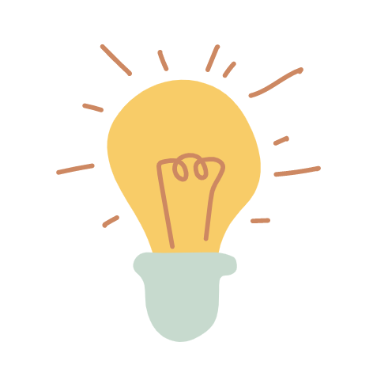
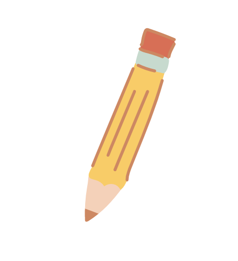

Hello, I'm Olivia Guzman
I am a UX/UI designer based in Austin, TX. I have 4 years of experience working in a global ecommerce environment and have a passion for learning about users and problem solving through color, design, & data.
I am a UX/UI designer based in Austin, TX. I have 4 years of experience working in a global ecommerce environment and have a passion for learning about users and problem solving through color, design, & data.
My formative background in sociology helps create intuitive design solutions that are supported by data collected in user research and testing
When working in a team environment, I have been an advocate for the users we represent, communicating their voices and ensuring they are the root of the decisions we make.
UX design has allowed me to create prototypes as a tool to measure behavior and effectiveness, validating ideas and identifying and solving user pain points.